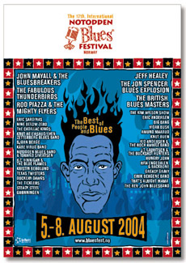
В шестой раз в жизни я ездил в благословенный край - норвежский город Нотодден, где каждый год в августе проходит крупнейший в Европе блюзовый фестиваль. Помимо самой большой в радиусе 10000 километров концентрации блюзовых звезд из Америки и других заслуженных блюзовых стран, половину интереса для меня представляют норвежские музыканты, с которыми пересекаемся мы в блюзовой жизни не в первый раз. Поэтому помимо отчетов о звездных концертах напишу о норвежцах последние сплени - подробно и без жеманства, ибо теперь уже они нам - как дорогие родственники. Итак, кто же выступил на фестивале?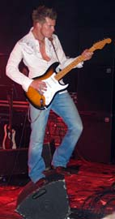
Молодой Амунд Морюд (Amund Maarud) с братом Хенриком (Henrik Maarud) за последние два года стали практически самой популярной норвежской блюзовой группой. В Москве и Владимире в 2003 году Амунд своей гитарой снес крышу тем, кто пришел послушать его в клубы, так, как здесь еще не удавалось никому. Несмотря на очевидные таланты и успехи на концертах, пластинки Amund Maarud Band немного хромают. Прошлогодняя Ripped, Stripped & Southern Fried немного скована и кривовато записана. В начале 2004 года Морюд перетряс свою группу, взяв более молодого басиста Пера Тобро (Per Tobro) и нового клавишника. Одновременно вышла следующая пластинка Commotion с Амундом в пламени, которая обозначила стилистический сдвиг Морюда от блюза в сторону рока. Быстро заработавший популярность Морюд решил выйти на широкие массы, играя более доступную для молодежи музыку. И по этой части у него есть все шансы, ибо экспрессия и гитарный талант Амунда - фантастические. На пластинке Commotion много музыки, похожей больше на рок, очень навороченные звуки и аранжировки, все летает, жужжит и пр. При этом, увы, пластинка весьма скучная. И невинность соблюсти, и капитал приобрести Морюду, в-общем, не удалось. Для Морюда, разумеется, это не конечная точка в творчестве, так что я не очень сильно переживаю, ибо верю, что он опять заиграет интересно.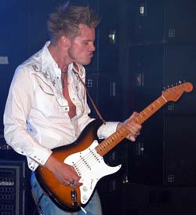
Послушав пластинку, от концерта я ожидал примерно того же. И действительно, количество героизма и экспрессии было запредельным, но музыкальные идеи явно мутноваты. Такое ощущение, что Морюд накрутил, добавил очень много приправ и энергии к своей музыке, но за этим богатством для меня, по крайней мере, проступает недостаток в содержании. Контраст с прошлогодними концертами велик. Тогда он играл очень блюзовые композиции, задача в которых состоит в том, чтобы обнажить, обозначить музыкальную идею, выдать ее в обостренном, голом виде, чтобы публика почувствовала, насколько она прекрасна. Именно в этом, на мой взгляд, и состоял необыкновенный талант Амунда. При таком подходе к музыке очень естественным является чистый звук гитары, простые тексты (продавец пиццы увел мою подружку) и эмоциональность или нежность в нужных местах. Нынче весь концерт в летающем, богатом примоченном звуке, сам Морюд на грани нервного срыва, но рок получается скучным, мутным, и, по большому счету, не служит таким источником вдохновения для исполнителя, каким бывает блюз. Итого, в Москве было заметно лучше, но, тем не менее, преклоняю голову перед талантом Морюда и верю, что он сыграет еще много хорошего.Видар Бюск (Vidar Busk) - давний кумир для меня и моих приятелей-гитаристов, а также большей части норвежских блюзовых фанатов. Впервые я услышал его в 1998 году на концерте, тогда он был в лучшей форме и своей музыкой разбил мне сердце. Видар - фантастический музыкант, от него всегда можно услышать совершенно неожиданные музыкальные завороты, как сплав стилей, так и совершенное чувство одного стиля. В жизни Бюск - очень жизнерадостная персона, всегда улыбающийся, тонко чувствующий человек острого ума, однако вместе с тем - человек нет от мира сего. Он не способен придти куда-либо вовремя, заплатить за квартиру или купить продукты. Когда менеджмент купил ему мобильный телефон, чтобы Бюска можно было отыскать, он выкинул его в урну через два дня, ибо телефон разрядился и перестал включаться.
Несколько раз Бюск терялся в Осло.
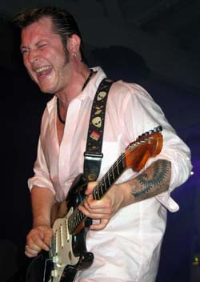
Бюск не способен строить какие-то далеко идущие планы, к чему-то упорно стремиться. Никто не знает, что именно он сыграет дальше, а также - очень плохо или гениально. Он может быть чрезвычайно работоспособен или же не делать ничего нового пару лет. Менеджмент заботится о Бюске, как родитель о маленьком ребенке, но все это - не следствие какой-то избалованности, звездной болезни и т.д., а просто неотъемлемое свойство его гениальной натуры. Норвежская блюзовая тусовка любит Бюска как свое дитя и одновременно - национальное достояние, однако четко понимает, что требовать или ожидать чего-то конкретного от Видара - пустое занятие, поэтому благосклонно относится к любым закидонам, в которые его бросает.К таким закидонам можно отнести и две последние попсовые пластинки Бюска, записанные на Warner Music. Факт их появления можно пробовать объяснить тем, что Бюск не способен играть долго одну и ту же музыку (рок-н-ролл, блюз, рок или свинг). Но, похоже, что акулы капитализма из WM расчетливо промыли мозги доверчивому Бюску, внушив, что поп-звук - это то, что нужно. А сами срубили много денег с молодежной аудитории. Сокрушаться по этому поводу я уже давно перестал, как и возлагать ожидания, но в связи с последними стилистическими изменениями плохо понимал, что же я услышу на концерте. Мне было интересно в любом случае, ибо в Москве Бюск показал умение выжать великолепную музыку из сомнительного материала, даже, несмотря на семплеры. В прошлом году Бюск в Нотоддене пообещал выступить в классическом блюзовом трио, как в старые времена. Однако был не в форме, и концерт получился немного халтурным, ибо свелся к не лучшему исполнению своих хитов без горячего желания сыграть хорошую музыку.
Концерт Бюска в этом году я послушал только на треть, больше не было возможности. Бюск был в добром здравии и настроении, в его группе помимо Фредрика с семплерами были три дудки из участников проекта Atomic Swing плюс еще новый органист на хаммонде. Концерт был равной смесью из блюзовых песен, рока и нежных попсовых номеров с последних альбомов. Аранжировки были красивы и изысканны, Бюск еще раз показал свои музыкальные таланты веером. Очень хороший концерт, однако мне было одновременно и немного скучновато. Из-за того, что я этот материал уже слышал, а также потому, что сам материал в поп-рок части не столь интересен. Он привлекает Бюска своей красивостью, но других граней там, мне кажется, нет.
На мой взгляд, общий кризис спонтанного Бюска связан с тем, что он достигнув определенной степени совершенства в блюзе в лучшие годы, переключился на другие стили, которые способны гораздо быстрее пресытить музыканта, а также не содержат какой-то движущей силы, которая заставляет великолепных музыкантов всю жизнь не уставая играть "три аккорда". Мне кажется, что блюз содержит какое-то сочетание грязи и красоты, которое служит источником вечного движения, не набивая оскомину красивым и не вгоняя в мрачность его отсутствием. Сыграть в каком-нибудь необычном стиле - очень интересно один раз, но от повторения это ведет к пресыщению и угасанию энтузиазма. Для Бюска даже великолепный погранично-блюзовый Atomic Swing слишком сладок во временной перспективе. Бюск откатал два года со свинговым оркестром, достиг высот, явно обыграл самого Брайана Зетцера (Brian Zetser), правда, немного не на его поле, но потом резко забросил эту тему, совсем перестав исполнять на концертах песни с альбома.
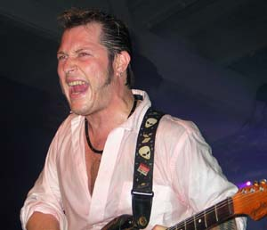
Я думаю, что при удачном положении планет в будущем мы дождемся от Видара Бюска чего-то сверхъестественного. А чтобы не переживать по дороге, не стоит ждать чего-то конкретного от того, что он запишет или сыграет в ближайшие месяцы. Остается от всего сердца пожелать Видару счастья, здоровья и творческих успехов!
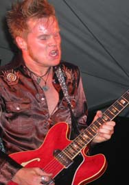
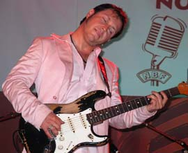
В качестве первого фестивального концерта в программе стояло совместное выступление Амунд Морюда и Видара Бюска. По вышеназванным причинам я заранее был в некотором недоумении, ибо плохо понимал, что же они сыграют на столь символичном мероприятии - открытие крупнейшего блюзового фестиваля - неужели, поп и рок? Случилось самое лучшее, то, чего я в принципе не ожидал. Амунд вместе с братом-барабанщиком Хенриком играл вместе с группой Бюска без семплеров и органа, но зато с двумя дудками. Мартин Виндстад, разумеется, тоже присутствовал, так что на сцене было две ударные установки. Играли по-очереди старые классические песни друг-друга вместе с номерами улетнейшего джамп-блюза, который оба героя умеют играть потрясающе, если захотят. Разумеется, никакого новейшего морюдовского забоя или лирики Бюска не было, ибо просто было невозможно исполнить в подобном составе без подготовки. Зато для меня было много нового и интересного в старых песнях, ибо Бюск играл вещи Морюда и наоборот.Два лучших норвежских блюзовых гитариста показали, что они могут сделать в рамках своей основной профессии. Великолепный концерт и отличное начало для фестиваля!
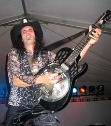
Слайд-гитарист, играющий в основном на добро, Эрик Сардинас (Eric Sardinas) - довольно известный человек в среде любителей блюза потяжелей. По стилю он является прямым продолжателем дела Джонни Винтера (Johnny Winter). У меня есть две его пластинки, на них есть несколько хороших номеров с сочетанием очень драйвового, но одновременно чистого и со вкусом сыгранного слайда в хорошей аранжировке. Его вокальная манера похожа на очень хорошего Винтера. Из числа забойных блюз-рокеров я отдам предпочтение Сардинасу, однако он - не самый мой любимый исполнитель в блюзе.Выглядит Сардинас очень колоритно - демоническая внешность, змеиная голова на шляпе, черные волосы, татуировки, горящие глаза и, при этом, изящные манеры. По технике, виртуозности владения слайдом и экспрессии трудно поставить с ним рядом кого-либо из современников. Для любителей соответствующей музыки Сардинас - восхитительный музыкант, настоящий подарок. Но мне на концерте было невыносимо скучно, музыка представляла из себя непрерывный энергичный забой. Достоинства аранжировок, которые я оценил на пластинках, по понятным причинам отсутствовали. Но ничего нового музыкально интересного взамен на концерте не было. Мне более-менее понравилась только пара номеров, слышанных на пластинках, где Сардинас играл, не превращая отдельные ноты в сплошной слайдовый гул. Ай-ай-ай, Эйрик, в погоне за угаром потерял чувство меры... Чуть-чуть талантливому музыканту не хватило вкуса...
До самого конца я не дослушал, говорят, что Сардинас поджег свою гитару. Ну а потом пожаловался, что менеджмент гонит со сцены, ибо время вышло, и он, разгоряченный бежит доигрывать - спускать пары в соседний маленький клуб.
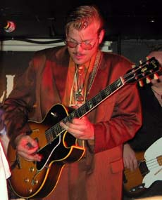
Хорошо известный российским слушателям после жаркого июня 2004 года гитарист Кид Андерсен (Christoffer "Kid" Andersen) в этот раз впервые выступил на нотодденском фестивале. Ему всего 24 года, последние несколько лет Кид живет и выступает в Калифорнии. Буквально через неделю - в начале сентября он перейдет из группы саксофониста Терри Хенка (Terry Hank) на постоянную работу основного гитариста к Чарли Масселвайту (Charlie Musselwhite) . В течение последних 10 лет Кид наращивал блюзовые мускулы, сначала регулярно выступал в Осло в клубе Мадди Уотерз (Muddy Waters), а после уехал в Америку и начал разъезжать по ней с концертами. В последний год Кид, который достиг высокого мастерства, взялся за завоевание мира. В конце 2003 года у него вышла отличная пластинка "Rock Awhile" с участием Джуниора Ватсона (Junior Watson) и Марка Хаммела (Mark Hummel), после чего Кид Андерсен стал регулярно наезжать на родину с концертами со всякими младшими джонлихукерами, получил большое признание в блюзовой тусовке, ему посвятил номер журнал Blues News и т.д. В промежутке Кид изрядно нашумел в 4-х российских городах.Кид - очень интересный гитарист. С одной стороны, он хорошо разбирается в музыке, знает джаз, свинг, рок и, в том числе, все эти сумасшедшие аккорды. С другой стороны, он знает, чувствует и может играть стили классиков блюза - трех Кингов - Альберта, Фредди и Би Би и других, плюс более современные вещи - вест-коаст, включая закавыки Джуниора Ватсона и пр. Несмотря на свою разносторонность, Кид прочно стоит на блюзовой основе, как никто другой из его сверстников. Для него блюз - вещь настолько органичная, вещь, которая его захватывает, и в которой он знает толк.
Кид Андерсен - мощный человек, у него 2 метра роста, немного хриплый бас, огромные руки, куча энергии и боевого задора. Кид - не слабак! Помнится, как в июне он прилетел с пересадкой из Лос-Анджелеса, проведя в самолете около 15 часов. После чего из-за проблем с документами один просидел в Шереметьево весь вечер и всю ночь. Все это время не падал духом, выпивал, общался с народом и изучал русский язык. А вечером после этого сыграл отличный концерт.
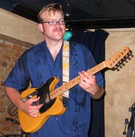
В его гитарной манере и пении выражается удивительное сочетание блюзовой мощи и одновременно - тонкой изысканности. Кид Андерсен играет, как самозаводящийся двигатель. Он сам себе на ходу подкидывает музыкальные идеи в виде "ну а что ты скажешь на это?", а потом сам себе отвечает "ладно, сейчас посмотрим". При этом не боится съехать с главной темы, сыграть неудачно или ошибиться, пускаясь в неожиданные для него самого импровизации. Ибо знает, что он - не слабак, как-нибудь справится. В результате, получается иногда немного небрежно, но совершенно удивительно. Подобную вещь у мастеров подмечают за Джуниором Ватсоном, он начинает играть какие-то супер-рискованные, нелогичные ноты, но к концу отрезка каким-то чудом умудряется завернуть их в законченную вещь, так что в результате получается гармонично и оправданно. Кид на джеме в Мадди Уотерзе посреди песни увидел на сцене гитару с перевернутыми струнами, которую оставил предыдущий левша-гитарист. Он тут же ее схватил, напрягся и минут за 5 научился на ней играть, выдавая забойнейшие драйвовые соло с элементами виртуозности. ;)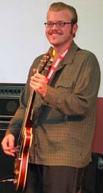
В Нотодденне концерты Кида проходили в маленьком клубе Rallar's, где я в прошлые годы слышал лучшие концерты - Бюска в 99м и Джуниора Ватсона в 2002. С Кидом выступила так называемая "The Rock Awhile Band", куда вошли лучшие норвежские блюзовые музыканты, которые играют или играли с Бюском в лучшие годы. Хотя, стоит заметить, одновременно у Бюска такой группы никогда не было, так что True Believers назвать ее нельзя.Мартин Виндстад (Martin Windstad) на барабанах, Бьорн Холм (Bjorn Holm) на басу, Джонни Огланд (Johnny Augland) на клавишах (он еще - прекрасный гитарист и ударник), а также Арне Рассмуссен (Arne Rassmussen) на гармонике. Это была действительно - супер-группа. Лучшие блюзовые музыканты играли любимую музыку, что им не часто приходится делать в последнее время, отчасти потому, что Бюска лихорадит. ;) Подобной улыбки на лице серьезного Мартина в течение всего концерта я еще не видел. Johnny Augland - фантастический клавишник, а Арне - лучший гармонист.
Этому концерту не таких уж известных музыкантов в маленьком клубе я отдам первое место на самом крупном блюзовом фестивале в Европе. Ура!
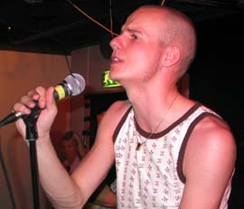
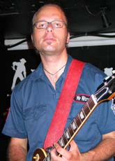
Молодой гармонист Эйрик Бергене (Eirik Bergene) совсем недавно - в феврале выступал в России со своей группой. Однако за прошедшие полгода довольно многое изменилось. В результате пертурбаций прошедшей зимой и обмена музыкантами с группой Морюдов состав преобразовался следующим образом. На басу теперь играет небезызвестный Билл Трояни (Bill Troiani), кроме того, в группе теперь две гитары - Хокун Хейе (Hakon Hoye) и Киккан Харалдсет (Kikkan Haraldset). У этих гитаристов совершенно разная манера игры, и они замечательно дополняют друг друга. Меня очень приятно удивило то, что за прошедшее с февральских гастролей время группа полностью сменила репертуар, так что мне было очень интересно на концерте. Полгода назад это был очень традиционный блюз в стиле Кима Вилсона, Сонни Боя и пр. Теперь стилистика стала разнообразной, почти эклектичной, блюз с элементами соул и даже фанка. В основном, вместо хитов - совсем неизвестные, но очень интересные песни.Группа Эйрика быстро набирает обороты. Она образовалась чуть больше года назад, но стала уже очень популярной в блюзовой среде. Сегодня группа играет более 10 концертов в месяц в весьма престижных заведениях и фестивалях, включая Нотодден. На базе Eirik Bergene Band несколько месяцев назад было собрано шоу гармонистов Blues Harp Melt Down в норвежском исполнении по аналогии с американским вариантом. Шоу имеет невероятный успех, ибо в нем принимают участие три лучших блюзовых гармониста Норвегии - это сам Эйрик Бергене, Арне Рассмуссен (выступал с Бюском в лучшие годы и записал потрясающую гармонику на двух ранних его пластинках) и Ричард Гъемс (тоже относительно молодой, но опытный супер-гармонист, редактор Blues News по совместительству).
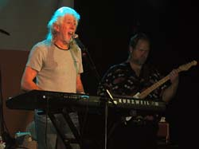
Джон Майалл был главным хедлайнером фестиваля, на моей майке его имя написано самыми большими буквами. Разумеется, я должен был посмотреть на классика своими глазами, но расписание поджимало, ибо хедлайнеров на фестивале было слишком много, и все они играли одновременно. На открытии фестиваля за популяризацию блюза Майалл получил ежегодную премию Blues Prissen. Причем, в виде исключения, ибо приз обычно дают скандинавским блюзовым деятелям. В Нотодден Майалл приехал в группе малого скромного состава. Сам он по-обыкновению пел, играл на клавишах и гармонике, с ним был бессменный замечательный гитарист Бадди Виттингтон, который исполнял все эти забойные соло с расстановкой на последних альбомах, плюс ритм-секция.В результате я не очень долго был на этом концерте, но по тому, что успел услышать, и по свидетельствам других очевидцев концерт не сильно отличался от содержимого последних пластинок, ни по звуку, ни по составу песен. Я очень люблю Майалла и эти пластинки, знаю их неплохо, и именно поэтому слушать такой концерт в целом не так уж и интересно. Хотя в другой обстановке, если бы это был единственных блюзовый концерт, услышанный за год, я бы, может, и стоял на ушах. Отдаю должное мастеру, но вот оно - пресыщение! Видел Майалла и не офигел. Более того, скажу, что были на фестивале вещи явно поинтересней.
Все это еще раз наталкивает на мысль о том, что на концерте ничего не значат прошлые заслуги или уровень известности. От юного скромного Эйрика Бергене, скажем, я протащился во много раз больше, чем от гиганта блюза - Джона Майалла. Причем, надеюсь, не из-за какого-то непонимания, а наоборот, испытав всю гамму утонченных эстетических музыкальных удовольствий.
Рода Пьяццу (Rod Piazza) я уже очень давно хотел послушать на концерте, ибо, по словам очевидцев, эти концерты переплевывают имеющиеся у меня записи. Гармонист Род Пьяцца уже более 30 лет выступает вместе со своей женой пианисткой - Хани (Honey Piazza). Группа Майти Флаерс (The Mighty Flyers) имеет фантастически длинную историю, за это время они стали столпом вест-коаст блюза. В группе в разное время играли трое лучших гитаристов вест-коаст - Junior Watson, Alex Shultz и Rick Holmstrom. Два года назад Холмстром выпустил сольный альбом Hydraulic Groove и ушел из Mighty Flyers, чтобы выступать со своим Rick Holmstrom Band. Его заменил Henry Carvajal, который вполне нормально вписался в коллектив и играет неплохо, но, конечно, до Холмстрома, который делал полдела в группе, ему далеко.
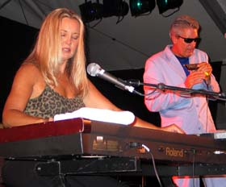
Майти Флаерс всегда выделялась своим собственным музыкальным стилем. В блюзе всегда есть место заигрываниям между сладким (sweeeeet!) и гадким, гладким звучанием супротив грубого и грязноватого. На мой взгляд, ни одна из этих двух составляющих по отдельности не является присущей "истинному блюзу", но именно в их сочетании, балансе, нужной пропорции и состоит самое интересное. Хани Пьяцца - фантастически виртуозная буги-вуги пианистка, хотя на словах говорит, что в большей степени ее манера игры растет из музыки Отиса Спэнна (Otis Spann). Творческий союз сердец Рода и Хани во многом определил стиль группы, который временами чуть перекашивает в "сладкую" сторону. Причем, если в большинстве групп солист чувствует что-то такое, он может принять организационные решения, а в случае с Хани и Родом понятно, что они всегда будут играть вместе.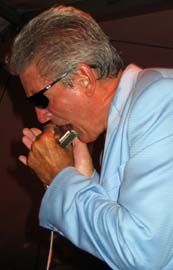
Я думаю, что Род давно и окончательно оставил мысли о том, чтобы как-то сильно менять стилистику группы. Зато ту свою вешь, которую они будут делать, они будут делать совершенно. И действительно, по свидетельствам соучастников Пьяцца очень требователен и очень много работает со своими музыкантами, его аранжировки всегда выверены, а концерт - тщательно подготовленное блюзовое шоу. Несмотря на строгость начальника, как говорит сам Пьяцца (это же я слышал и от других), он всегда дает свободу для самовыражения всем участникам группы. Майти Флаерс всегда была сборной очень ярких музыкантов. Род - один из лучших современных гармонистов, Хани - виртуозная пианистка, о гитаристах я уже упоминал, на контрабасе великолепный Билл Стьюв (Bill Stuve) (записавший, кстати говоря, несколько лет назад классный и очень смешной собственный компакт), барабанщик Джимми Бот (Jimmy Bot). На концертах каждый из участников группы получает время, чтобы играть свою собственную музыку. Во многом благодаря этому группа существует фантастически долго.Концерт на фестивале был тем самым впечатляющим звуковым шоу. Род играл со своим фирменным звуком хроматики, включая традиционное сногсшибательное соло на гармонике без группы на 15 минут без продыха. Хани зашибала на рояле такое буги, которое я до этого не слышал, пару раз даже посредством ног. Билл Стьюв пел песни, а Карваял сыграл несколько забойных соло. Они были вполне качественными, но не безумно интересными, ибо все то же самое я слышал раньше у других более серьезных гитаристов. Хани обеспечила концерту стойкий привкус буги-вуги отчасти в ущерб блюзовости звучания. Из-за чего местами от концерта отдавало цирковым представлением, и форма в некотором смысле была интересней содержания. В итоге, несмотря на чувство легкого неудовлетворения, концерт мне понравился. Несмотря на недостатки, я по-прежнему испытываю пиитет к великой группе, которая записала и сыграла столько хорошей музыки. Майти Флаерс - многослойная группа - сначала очень нравится, потом что-то может надоесть, ну а, в конце концов, все равно - все отлично.
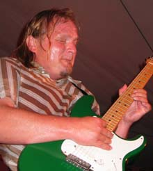
Кнут Рейерсруд (Knut Reiersrud) - один из самых сильных норвежских гитаристов, имеющих отношение к блюзу. Начал играть на гитаре он в начале 70-х после того, как увидел по телевизору Бадди Гая (Buddy Guy). Довольно долго он жил и играл в Чикаго, и достиг большого мастерства. Когда Рейерсруд берется играть блюз, сносит крышу, что он доказал в частности в 99 году в Нотоддене, когда отыграл пол-концерта с тем же Бадди Гаем. Единственная проблема в том, что он делает это нечасто. Его многочисленные пластинки помимо порции блюза имеют сильный уклон в психоделику с элементами соул и рока. К сожалению, музыкальные идеи там мутноваты и скучны. Испытавая веру в таланты Рейерсруда, я каждый раз жду, когда же он выстрелит как блюзовый музыкант. Однако это случается слишком редко, увы. Все-таки, скромно замечу Кнуту, что хороший музыкант должен помимо умения играть что-то интересное, должен иногда это делать.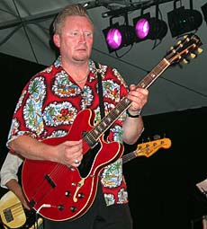
Свен Зеттерберг (Sven Zetterberg) из Швеции (Sweden) - замечательный бывалый блюзовый гитарист и певец. Один из самых известных в мире представителей скандинавского блюза. У Зеттерберга мощный голос и впечатляющая гитарная манера, которые в молодости оказали влияние на многих выступающих сейчас норвежских и шведских музыкантов.В последние годы Свен сильно увлечен соул-музыкой. У него есть много отличнейших собственных песен в этом стиле. Однако, пожалуй, он стал немного перегибать палку. Вместо густой смеси разных стилей, которую он играл и записывал раньше, он стал выкристаллизовывать свой соул-стиль, что определенно привело к некоторому однообразию. В голову почему-то приходит смешная ассоциация с поздним Элвисом, который от хулиганства в начале перешел к однообразному пафосу на эстраде. Однако, замечу, что у Свена совсем не все так плохо, он остается мастером и, я думаю, сыграет еще много интересного.
Концерт Рейерсруда с группой Зеттерберга я послушал не целиком, а по результатам у меня осталось двойственное впечатление. С одной стороны - местами очень круто и интересно, но в целом как-то запутанно и скучно.
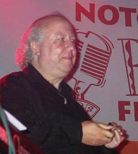
Вероятно, эту группу британских легенд блюза собрали для поднятия престижа фестиваля. Поучаствовав в организации аналогичных, но более скромных мероприятий понимаю, что без этого - никуда. В группу British Blues Masters вошли Long John Baldry, Kid Simmons, Bob Hall, Tom McGuinnes, а за месяц до фестиваля к ним в программу прицепили Питера Грина (Peter Green). Фактически это был полноформатный джем-сейшн - в музыкальном плане идея совершенно провальная. Разумеется, даже гениальный Питер Грин не способен парой аккордов на гитаре и несколькими невразумительными соло на гармонике в незнакомой ему песне сделать что-то интересное. В итоге - целый концерт-недоразумение безликого ритм-н-блюза.Теперь оказывается, что кроме Джона Майалла, я еще видел и Питера Грина, но это не перевернуло мою жизнь. ;) Ох, не сносить мне головы. ("Что ты видала при дворе? Видала мышку на ковре.").
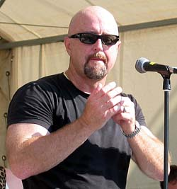
Выступление Кима Вилсона (Kim Wilson) было одним из самых ожидаемых концертов. Он происходил днем на берегу озера в 30-ти градусную жару. С Вилсоном играл великолепный черный относительно молодой гитарист Kirk Fletcher, бас-гитарист Ronnie James и знаменитый Richard Innes на барабанах. Концерты Вилсона всегда очень "традиционны", это всегда примерно один набор его хитов с классических пластинок, таких как My Blues и Smokin' Joint.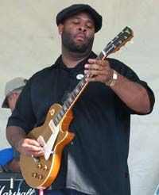
Ким Вилсон - один из лучших современных блюзовых мастеров, он очень органично сочетает классическую блюзовую основу с современным звучанием, так что его по стилю нельзя однозначно приписать к чикагскому, вест-коаст или какому-то еще блюзу. Пожалуй, я бы причислил Кима Вилсона к числу ныне живущих классиков блюзовой гармоники. Его стиль самостоятелен и не является простым переигрыванием чужого. Песни Вилсона - плотно-сбитые блюзовые стандарты, которые не разукрашены для доступности слушателю, но будут служить прочной базой для тех, кто будет и уже исполняет их вслед за Вилсоном.Начало концерта оказалось немного смазанным из-за звука и отсутствия настроения, но потом все стало здорово! Супер-группа, мощный вокал Кима Вилсона, его изысканные красивые соло на гармонике сделали свое дело. Помимо отличного, классно исполненного блюзового материала меня особенно поразил талант Вилсона как гармониста. У него потрясающее чувство стиля и сдержанной блюзовой эмоции. Вилсон - не застывший в прошлом классик, а человек, который сегодня дальше других проник в тайны и тонкости игры на гармонике. 15 минутное соло в середине концерта без группы было не только не скучным, но захватило дух и заставило биться сердце. Если бы у меня была шляпа, я бы снял ее перед мастером!
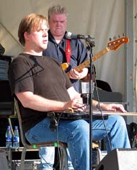
Слепой канадский гитарист Джефф Хили (Jeff Healey) из числа участников фестиваля - один из наиболее популярных блюзовых исполнителей в неблюзовой среде, поэтому по поводу его концерта на фестивале был большой ажиотаж. Тот факт, что он - слепой, да еще играет с гитарой на коленях, разумеется, прибавляет интереса. Я ожидал от него нажима на попсовые струны человеческой души, песен типа While My Guitar Gently Weeps или же White Room by Cream. Отчасти прогноз оправдался, но все-таки Джефф оказался не так прост, как ожидалось. Он - человек острого ума, отпускал замечательные шутки между песнями. Кроме того, мне очень понравилась его гитарная манера. Хили имеет очень хорошее чувство стиля, не играет лишнего, ноты звучат драйвово и к месту. Хотя, конечно, в целом с его группой получается немного попсово и скучно...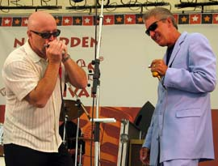
Этот великолепный концерт на главной сцене был закрытием фестиваля. Род Пьяцца присоединился к Киму Вилсону и его группе. На гитаре играл вышеупомянутый Кирк Флетчер, запомните это имя, вы о нем еще услышите! По своей концепции концерт был трибьютом классикам гармоники, которые наиболее сильно повлияли на Вилсона и Пьяццу - это Little Walter и George "Harmonica" Smith. Вилсон и Пьяцца играли их песни с небольшой добавкой вещей самого Вилсона. Это был редкий, потрясающий блюзовый концерт. Вилсон с Пьяццей выступали вдвоем и по-очереди, временами на двух хроматиках.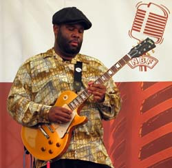
Кирк Флетчер был в ударе и играл одновременно мощно, драйвово и очень непросто. Пьяцца на традиционном материале показал все свое блюзовое мастерство. Не думайте о нем, как о человеке, погрязшем в блеске бездуховности вест-коаст блюза! Род Пьяцца - сильнейший из современных мастеров, в каком бы блюзовом стиле он не выступал!Словами трудно передать радость от музыки, у меня после чуть не отвалилась нога и голова, которыми я качал в такт ритма. Нам страшно повезло услышать вместе на одной сцене двух лучших современных блюзовых гармонистов, не думаю, что они часто встречаются в подобной обстановке. Ура! Это было прекрасное завершение для супер-фестиваля.
По уровню программы организаторы фестиваля переплюнули все, что только можно. Тройка лидеров - Майалл, Пьяцца, Ким Вилсон плюс куча не столь известных, но отличных музыкантов. На самом деле, начиная с какого-то момента, увеличение количества звезд уже перестает влиять на общее впечатление, ибо все равно физически нельзя послушать всех. Кроме того, иногда случается, что какие-то хедлайнеры не впечатляют. На этот раз организаторы явно избаловали и пресытили меня, от чего в моем тексте сквозят нотки пренебрежения к великим и желание замечать шероховатости. Ну а так, что говорить, - великолепный фестиваль! Для меня же, на самом деле, главное воспоминание - это не общая масса авторитетов или количество посещенных концертов, а один-два наиболее запавших в душу. Даже когда программа с виду не очень сильная, два супер-концерта в каких-нибудь маленьких клубах оставляют надолго приятное томление на сердце. В этом году это случилось со мной в очередной раз. Плюс, конечно, все эти прекрасные попойки с друзьями в Нотоддене и в клубе Мадди Уотерз в Осло, есть что вспомнить. Ну а важнее всего для меня, разумеется, - это модная майка с надписями JOHN MAYALL и JEFF HEALEY, в которой я всем на зависть буду щеголять по московским блюзовым клубам!
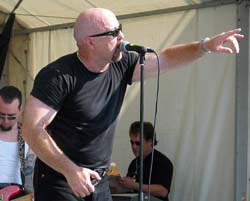
Федор Романенко, 27.08.2004